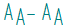

Specify Annotation Letters dialog box
The Specify Annotation Letters dialog box defines the alphanumeric labels that are assigned automatically to view annotation names, to datum frames, to hole callout, and other types of annotations when they are created. These labels must be unique, per annotation object type, within the current document.
- Letters Used for Annotation
-
Specifies up to four different user-defined combinations of alphanumeric characters that can be used to label viewing plane, cutting plane, detail envelope, and datum frame annotations.
- List 1
-
Specifies the primary character set for creating view annotation names automatically. They are used in the order they appear in the box.
The default character set includes all letters of the English alphabet. You can type other letters and numbers, but special characters, spaces, punctuation, and duplicate letters are not allowed.
Note:-
You can use the Character Map command
 to open the Microsoft Character Map dialog box, which you can use to insert characters that originate in other languages, such as
Chinese, Japanese, and Korean. However, the drawing view style you are using must
specify a font that supports the characters you insert.
to open the Microsoft Character Map dialog box, which you can use to insert characters that originate in other languages, such as
Chinese, Japanese, and Korean. However, the drawing view style you are using must
specify a font that supports the characters you insert. -
All characters in the List 1, List 2, List 3, and List 4 boxes must be specified as Unicode characters.
- When list ends continue list appended with
-
Selects one of three different lettering or numbering schemes to add to the end of the annotation letter string to create a unique label name. These are applied when the primary label letters (in the List 1 box) have been used once.
The append options are as follows:
- Sequenced Letter (AA, AB, AC, ...)
-
When the last annotation letter in List 1 has been used, then the next annotation object that is created is labeled AA, and the next one is labeled AB, and then AC.
- Number (1, 2, 3, ...)
-
When the last annotation letter in List 1 has been used, then the next annotation object that is created is labeled A1, and the next one is labeled A2, and then A3.
- Duplicate Letter (AA, BB, CC, ...)
-
When the last annotation letter in List 1 has been used, then the next annotation object that is created is labeled AA, and the next one is labeled BB, and then CC.
- Append as subscript
-
Displays the appended letters or numbers as subscript.

Note:The dash and the spacing on either side of it are defined in the drawing view style. You can do this on the Caption tab (Drawing View Style dialog box), in the Properties box, Suffix (%AS).
-
- List 2, List 3, List 4
-
The List 2, List 3, and List 4 boxes define three additional character sets for creating label names. For example, you can create a character set that uses only numbers, or a combination of letters and numbers.
- When list ends continue list appended with
-
Specifies the additional letter or number sequence to append to the annotation letter string, which is defined in the List 2, List 3, or List 4 box, to create a unique label name. This is applied when the primary label letters have been used once.
- Append as subscript
-
Displays the appended letters or numbers as subscript.
- Assign Lists
-
Assigns annotation letters to different types of annotation objects. The annotation letters appear in the annotation caption when the object is created.
You can assign the user-defined names in the List 1, List 2, List 3, and List 4 boxes, or you can assign system-defined sequential numbers, uppercase or lowercase Roman numerals, or no label at all.
- Viewing plane
-
Assigns the annotation naming convention for viewing planes.
- Detail envelope
-
Assigns the annotation naming convention for detail envelopes.
- Cutting plane
-
Assigns the annotation naming convention for cutting planes.
- Datum frame
-
Assigns the annotation naming convention for datum frames.
- Reset
-
Restores all of the options on this dialog box to the default values for labeling and sequencing.
Caution:If viewing planes, cutting planes, detail envelopes, or datum frames exist in the document, and if Follow defined object sequence is currently selected on the Annotation tab (Solid Edge Options dialog box), then pressing the Reset button renames all of the existing view annotation objects.
How do I
Define a view annotation captionDefine annotation labels
Learn more
View annotation edit handlesWorking with view annotation captions
Assigning view annotation labels
Look up more details
Define Object Sequence dialog boxQuick links
Drawing view captionsAutomating captions
Drawing view styles
Drawing view style workflow